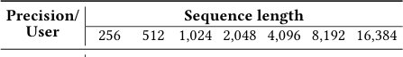
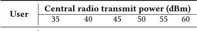
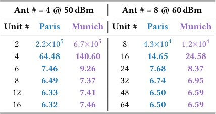
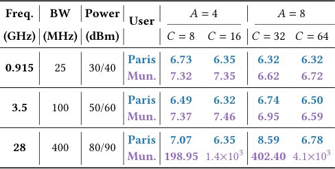
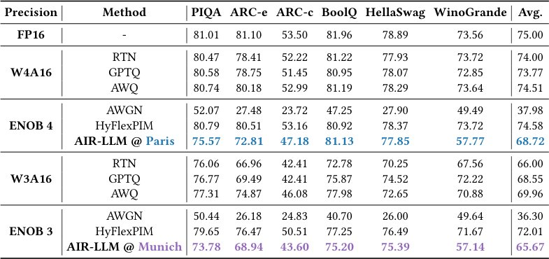
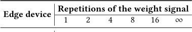
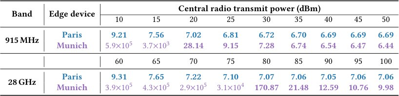
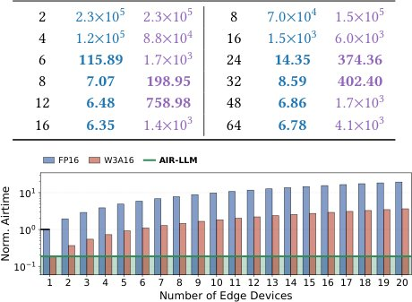
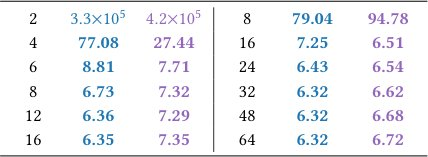

AIR-LLM: жад пен жүктеусіз нейрондық желілерді іске қосу
 операциясының 𝐴 ішкі көбейтіндісін (IP) (немесе нақты мәнді болса 2𝐴) орындайтын [AIR-LLM](../concepts/air-llm.md) RF ес](../../../media/2026-10-02/air-llm-broadcasting-ai-weights-over-radio-for-memory-free-e-f2.jpg)
Суреттің толық сипаттамасы
Сурет 2. Әр раундта GEMV операциясының 𝐴 ішкі көбейтіндісін (IP) (немесе нақты мәнді болса 2𝐴) орындайтын AIR-LLM RF есептеу қозғалтқышына шолу. Орталық радиостанция бұл IP салмақтарын пайдаланушыға арналған алдын ала кодтаусыз өзінің 𝐴 антеннасы арқылы таратады. Содан кейін әрбір шеткі құрылғы қабылданған 𝐴 салмақ толқын пішіндерін өзінің GEMV кірісімен бірге 𝐶 калибрлеу блоктарына береді, олардың прекодерлері мен посткодерлері SVD негізіндегі бастапқы баптау және ALS негізіндегі дәл баптау арқылы сол пайдаланушының өз арнасынан алынады. 𝐶 блоктарының шығыстарын қосындылау осы раундтың GEMV шығысын береді.
AIR-LLM нейрондық желі есептеулерін жергілікті жадтан радиожиілік доменіне ауыстырады. Орталық станция модель салмақтарын OFDM сигналдары арқылы таратады, ал пайдаланушы құрылғысы қарапайым RF-миксер көмегімен матрицалық-векторлық көбейтуді (GEMV) орындайды. Бұл деректерді оқуға кететін энергияны үнемдеп, жады шектеулі құрылғыларда LLM-ді іске қосуға мүмкіндік береді.
Басты ойлар
- Есептеулер миксерлер арқылы аналогтық RF-доменде орындалады
- FP16 есептеулеріне қарағанда 157,7 есе энергия үнемдеу
- Масштабтау: бір тарату шексіз пайдаланушыға қызмет етеді
Толығырақ
AIR-LLM негізінде радиожиілік миксерін (RF mixer) есептеу түйіні ретінде пайдалану жатыр. Миксер сигналдарды уақыт доменінде аналогтық түрде көбейтеді, бұл жиілік доменіндегі сызықтық конволюцияға эквивалентті. GEMV (General Matrix-Vector Multiplication) операциясын жүзеге асыру үшін модель салмақтары OFDM-тасымалдаушыларына кодталады, ал активтендірулер жергілікті осциллятор арқылы беріледі. Нәтижесінде шығыс сигналының ортаңғы тасымалдаушысы векторлардың скалярлық көбейтіндісін қамтиды, бұл барлық аралық деректерді цифрландырмай-ақ нәтижені алуға мүмкіндік береді.
Масштабтау үшін жүйе MIMO-мультиплекстеуді (Multiple-Input Multiple-Output) қолданады және бір уақытта бірнеше салмақ ағынын таратады. Арнаны калибрлеу прекодер мен посткодер жұбы арқылы жүзеге асырылады, бұл клиент жағындағы есептеу шығындарын азайтады. NVIDIA Sionna сәулелерді қадағалау (ray-tracing) көмегімен LLaMA-3.1-8B моделінде өткізілген сынақтарда бұл әдіс FP16-мен салыстырғанда энергия шығынын 157,7 есе азайтып, 20 пайдаланушы үшін тарату уақытын 104,1 есе қысқартты.
Шектеулер
Зерттеу NVIDIA Sionna арналарын модельдеуге және бір типті RF-миксер профиліне негізделген, бұл нақты ортадағы кедергілерді толық қамтымайды.
Мақаланың толық талдауы
Түйіндеме
Қазіргі заманғы үлкен тілдік модельдер (LLM) бұлтты инфрақұрылымдардан перифериялық құрылғыларға белсенді түрде ауысуда. Алайда, мұндай құрылғылар көбінесе жадтың жетіспеушілігі немесе модель салмақтарын жүктеу кезіндегі жоғары энергия шығыны сияқты шектеулерге тап болады. Авторлар мынадай сұрақ қояды: LLM инференсін салмақтарды жергілікті сақтамай немесе алдын ала жүктемей, оларды «әуе арқылы» қабылдап, нақты уақыт режимінде өңдеу мүмкін бе?
AIR-LLM тұжырымдамасы ұсынылған, ол орталық радиотораптан (мысалы, 5G базалық станциясы) және перифериялық пайдаланушыдан тұрады. Радиоторап модель салмақтарын эфирге таратады, ал пайдаланушы құрылғысы радиожиілік (РЖ) араластырғыштарды пайдалана отырып, тікелей РЖ доменінде жалпы матрицалық-векторлық көбейту (GEMV) операциясын орындайды. Деректерді тасымалдау уақытын оңтайландыру үшін MIMO кеңістіктік мультиплекстеу және сымсыз арнаны калибрлеу үшін энергияны үнемдейтін прекодер-посткодер жұбы қолданылады.
Маңызды
AIR-LLM салмақтарды сақтамай-ақ инференсті орындауға мүмкіндік береді, FP16 базалық деңгейімен салыстырғанда 157,7 есе энергияны үнемдейді және 20 пайдаланушымен жұмыс істегенде тасымалдау уақытын 104,1 есе қысқартады.
Түсіндірме
GEMV (General Matrix-Vector Multiplication) — бұл нейрондық желілер жұмысының негізі болып табылатын математикалық операция, мұнда салмақтар матрицасы кіріс векторына көбейтіледі.
Жүйе NVIDIA Sionna симуляторының көмегімен екі қалалық сценарийде, нақты РЖ араластырғыштардың сипаттамаларын ескере отырып сыналды. LLaMA-3.1-8B моделімен жұмыс істегенде WikiText-2 деректер жиынындағы перплексияның деградациясы небәрі 4,0%-ды құрады. Жүйе ауқымды, себебі орталық радиоторап пайдаланушыларды сәйкестендіруді талап етпейді, бұл қамту аймағындағы шексіз абоненттерге қызмет көрсетуге мүмкіндік береді.
Абайлаңыз
Нәтижелер NVIDIA Sionna ортасындағы симуляциялар мен РЖ араластырғыштардың профильдеуіне негізделген, бұл нақты аппараттық жабдықтағы жұмыс жағдайларынан өзгеше болуы мүмкін.
Кіріспе
LLM-ді шеткі құрылғыларға енгізу
Бүгінгі таңда триллиондаған шеткі құрылғылар денсаулықты бақылау, сөзді тану және автономды көлік жүргізу сияқты қолданбалар үшін машиналық оқыту әдістерін белсенді қолдануда. Үлкен тілдік модельдер (LLM) табиғи тілді түсіну мен өңдеуде бірегей мүмкіндіктер береді, алайда оларды шеткі құрылғыларда пайдалану негізінен бұлттық есептеулерге тәуелді. Бұл деректердің құпиялылығы мен сигналдарды берудегі кідірістерге қатысты мәселелерді туындатады. Негізгі кедергі — модельдердің үлкен көлемі: мысалы, LLaMA-3.1-8B моделі FP16 форматында 16 ГБ, ал 4-биттік кванттаудан (WoQ) кейін де 4 ГБ жадты қажет етеді.
Маңызды
LLM-ді шеткі құрылғыларда орналастырудың басты қиындығы — жад көлемінің жеткіліксіздігі және салмақ коэффициенттерін жадтан есептеу блогына тасымалдауға кететін жоғары энергия шығыны.
Түсіндірме
Кванттау (quantization) — модель параметрлерінің дәлдігін төмендету арқылы оның жадтағы көлемін азайту әдісі.
LLM-де қорытынды шығару (inference) процесі жадтың өткізу қабілетімен шектелген: бір салмақты оқу тек екі өзгермелі нүктелі операцияны (FLOPs) қамтамасыз етеді. Нәтижесінде, деректерді тасымалдауға кететін энергия есептеу процесінің өзіне қарағанда әлдеқайда жоғары. Жад ішіндегі есептеулер (ReRAM, PCM, SRAM) немесе эфир арқылы есептеулер (over-the-air) сияқты әдістер аппараттық шектеулерге (мысалы, 128×128 кроссбарлар) байланысты қазіргі LLM-дер үшін тиімсіз.
Абайлаңыз
Қолданыстағы аппараттық шешімдер (мысалы, 128×128 кроссбарлар) матрицалық есептеулердің көлемін шектеп тастайды, бұл өсіп келе жатқан LLM архитектуралары үшін жарамсыз.
Біз қолданыстағы 5G желілерінің мүмкіндіктерін пайдалануды ұсынамыз. 5G базалық станциясы арқылы салмақ коэффициенттерін барлық пайдаланушыларға бір уақытта хабар тарату (broadcasting) арқылы жеткізуге болады. Есептеулер үшін біз қабылдағыштарда бар пассивті радиожиілікті (RF) араластырғыштарды қолданатын RF-есептеу әдісін ұсынамыз. Бұл сигнал келген сәтте есептеуді аналогтық түрде аяқтауға мүмкіндік береді, осылайша салмақтарды цифрландыру немесе жергілікті жадта сақтау қажеттілігі жойылады.
Кесте 1. AIR-LLM мен қолданыстағы шеткі есептеу парадигмаларын салыстыру
| 1 | 2 |
|---|---|
| 2 | 2 |
AIR-LLM есептеу парадигмасы
AIR-LLM — бұл LLM инференсіне арналған архитектура, мұнда орталық радиостанция (мысалы, 5G мұнарасы) модель салмақтарын OFDM сигналының жиілік спектріне кодтап, таратады. Қамту аймағындағы кез келген құрылғы бұл сигналды қабылдап, есептеулерді тікелей өзінің радиожиілік (RF) трактында орындайды. Негізгі элемент — RF-араластырғыш (mixer), ол сигналдарды уақыт доменінде көбейтеді, бұл жиілік доменіндегі сызықтық конволюцияға эквивалентті. Жергілікті осцилляторға активтену сигналы берілгенде, салмақтар спектрінің активтену спектрімен конволюциясы жүреді, ал нәтиженің орталық ішкі тасымалдаушысы (subcarrier) салмақтар мен активтену векторларының скалярлық көбейтіндісін береді. Парадигмаларды салыстыру 1-кестеде көрсетілген.
Маңызды
AIR-LLM RF-араластырғыштарды пайдаланып, GEMV операцияларын тікелей радиоарнада орындайды, бұл жергілікті жадқа жүгіну қажеттілігін жояды.
Жүйе A × A MIMO кеңістіктік мультиплексирлеуін пайдаланып, бір уақытта A салмақ ағынын таратады, бұл эфир уақытын A есе қысқартады. Арнаны компенсациялау үшін C блокты калибрлеу қолданылады, бұл матрица инверсиясынан әлдеқайда арзан. AIR-LLM пайдаланушылармен «қол алысуды» (handshake) немесе SNR-ге қарай модуляция схемасын (MCS) бейімдеуді талап етпейді, өйткені есептеулер термиялық шуға төзімді. Париж және Мюнхен сценарийлерінде 1B-ден 70B параметрге дейінгі модельдерде (LLaMA-3.1-8B) дәлдіктің (PPL) төмендеуі небәрі 4.0% құрады. Бір токенге кететін энергия қашықтағы жадтағы FP16/4-биттік салмақтармен салыстырғанда 157.7/40.4 есе, ал жергілікті жадтан алумен салыстырғанда 51.5/13.9 есе азайды. Эфир уақыты 104.1/26.0 есе қысқарды.
Түсіндірме
GEMV (General Matrix-Vector Multiplication) — нейрондық желілердегі негізгі операция, мұнда салмақтар матрицасы активтену векторына көбейтіледі.
OFDM және MIMO арна моделі
Сигналдар Nfft FFT өлшемі мен B жолағы бар OFDM негізінде құрылған, мұнда ішкі тасымалдаушылар аралығы Δ f = B/Nfft. A_t × A_r MIMO жүйесінде таратылатын сигнал St \in \mathbbCAt imes N extfft және қабылданған сигнал Sr \in \mathbbCAr imes N extfft арна H \in \mathbbCAt imes Ar imes N extfft арқылы байланысқан. Қабылданған сигнал (1) формуласымен анықталады: Sr[ar, k] = \sumat=0At-1 H[at, ar, k] · St[at, k] + \frac\sigma\sqrtN extfft · N мұнда σ² — AWGN шу қуаты. Қабылдаушы жағында сигналды қалпына келтіру үшін (2) псевдо-кері матрица қолданылады, бұл 8A_t A_r Nfft өзгермелі нүктелі операцияны талап етеді.
Абайлаңыз
Арна инверсиясы арқылы сигналды қалпына келтіру құрылғы жағында айтарлықтай есептеу ресурстарын талап етеді, бұл үлкен MIMO өлшемдерінде тиімділікті шектейді.
Кешенді мәнді сызықтық конволюция
Радиожиілік (РЖ) араластырғыш Δ f қадамы бар екі кіріс сигналы арасында кешенді мәнді сызықтық конволюцияны (∗) орындауға мүмкіндік береді. FFT өлшемі (Nfft) бірдей деп алсақ, кіріс сигналы X \in \mathbbCN extfft және салмақ сигналы W \in \mathbbCN extfft (3)-формула бойынша Y \in \mathbbC2N extfft-1 шығыс сигналын құрайды: Y[k] = (W * X)[k] = \sumk' W[k'] · X[k-k'].
Маңызды
РЖ-араластырғыш конволюция операциясын аппараттық деңгейде орындап, кешенді сигналдарды тиімді өңдейді.
GEMV/IP үшін сызықтық конволюцияны қолдану
ML қорытындылау негізінде жатқан Y = W · X (W \in \mathbbRM imes N, X \in \mathbbRN) матрица-вектор көбейтіндісі (GEMV) M тәуелсіз скалярлық көбейтіндіге (IP) бөлінеді. (3)-конволюция кешенді болғандықтан, бір сигнал жұбы екі IP-ді тасымалдай алады. W матрицасының m және m' жолдары үшін Nfft = N болғанда, кіріс сигналы X тікелей беріледі, ал салмақ сигналы Wm,m'[k] = W[m, N-1-k] + j · W[m', N-1-k] (4) түрінде кодталады. (5)-формулаға сәйкес, орталық ішкі тасымалдаушы Y[N-1] нәтижені Y[m] + j · Y[m'] ретінде сақтайды. Қалған 2N-2 ішкі тасымалдаушылар Δ f жолақты төмен жиілікті сүзгі (ТЖС) арқылы кесіледі. Бұл АЦП энергия шығынын азайтады, себебі тек бір ішкі тасымалдаушыны цифрлау жеткілікті. Барлығы \lceil M/2 \rceil салмақ сигналы қажет.
Түсіндірме
GEMV — бұл матрицаны векторға көбейту операциясы; мұнда ол есептеу жылдамдығын арттыру үшін аналогтық радио сигналға «оралады».
РЖ есептеу қозғалтқышы
AIR-LLM архитектурасы (2-сурет) MIMO жүйесін пайдаланады, мұнда эфирге таратылатын салмақтар арнасы аналогтық GEMV үшін бейімделген пре-кодер және пост-кодер жұбымен калибрленеді.
Мәселені тұжырымдау
Біз A × A MIMO жүйесін қарастырамыз. Бұл A санына дейінгі параллель кеңістіктік ағындарды қолдайды, бұл бір циклде 2A скалярлық көбейтіндіні орындауға мүмкіндік береді. GEMV \lceil M/(2A) \rceil циклді талап етеді.
Калибрлеу блогын жобалау
Калибрлеу блогы (3-сурет) мыналарды орындайды: (i) x сигналын цифрлық пре-кодтау және IFFT, (ii) аналогтық A жолға дубликаттау, (iii) W' сигналдарымен араластыру және сүзу, (iv) цифрлық пост-кодтау.
Ішкі тасымалдаушыларды калибрлеу үшін пре-кодтау
Пре-кодер P extpre \in \mathbbCN extfft арнаның біркелкі емес жиіліктік жауабын өтейді. x'[k] = x[k] · Ppre[k] (6) сигналы пре-кодермен элемент бойынша көбейтіледі.
Аналогтық пре-кодталған конволюция
x' сигналы A РЖ-араластырғышына беріледі, олар параллель конволюцияны орындайды: \hatya = w'a^ op · x' (7).
Антенналарды калибрлеу үшін пост-кодтау
Пост-кодер P extpost \in \mathbbCA imes A антеннааралық кедергілерді жояды: \haty'a = \suma'=0A-1 P extpost[a, a'] · \hatya' (8).
Калибрлеу блоктары арасындағы ынтымақтастық
Әртүрлі Ppre және Ppost бар C калибрлеу блогы қолданылады. Соңғы шығыс \haty''a = \sumc=0C-1 \haty'c,a (9) барлық блоктар нәтижелерін жинақтайды.
Прекодер мен посткодерді оңтайландыру
AIR-LLM-нің басты мақсаты — соңғы шығыс сигналы \haty мен нақты сигнал y арасындағы орташа квадраттық қатені (MSE) азайту. Ол үшін Ppre прекодері мен Ppost посткодері барлық калибрлеу блоктары бойынша бірлесіп оңтайландырылады. OPT-Orig есебі былайша тұжырымдалады:
$P^{\star}_{pre}, P^{\star}_{post} = \arg \min_{P_{pre}, P_{post}} \mathbb{E}_{x, W} \left[ \frac{1}{A} \sum_{a=0}^{A-1} \/ \hat{y}_a - y_a \/^2 \right] \quad (10)$
Маңызды
Оңтайландыру тек арна сипаттамаларына тәуелді қатені азайтуға бағытталған, бұл қымбат онлайн оқытуды қажет етпейді.
W және x мәндері алдын ала белгісіз болғандықтан, OPT-Orig-ті тікелей шешу қиын. Алайда, мақсатты функция (W, x)-ке қатысты билинейлі болғандықтан, ол тек бірінші және екінші реттік статистикаға тәуелді. Жоғары SNR (сигнал-шу қатынасы) жағдайында есеп OPT-Chan түріне келтіріледі:
$P^{\star}_{pre}, P^{\star}_{post} = \arg \min_{P_{pre}, P_{post}} \sum_{k=0}^{N_{fft}-1} \sum_{c=0}^{C-1} \/ P_{pre}[c, k] \cdot P_{post}[c, :, :] \cdot H[:, :, k]^T - I_A \/^2 \quad (12)$
Мұнда I_A — A × A өлшемді бірлік матрица. Мақсат — әрбір ішкі тасымалдаушы үшін арна әсерін нөлге теңестіру.
1-қадам: инитиализация үшін жуықтау
OPT-Chan-ды шешу үшін екі кезеңді тәсіл қолданылады. Алдымен OPT-Approx жуықтауы қолданылады, онда арна амплитудаларының салмақтық әсері ескерілмейді:
$P^{(0)}_{pre}, ilde{P}^{(0)}_{post} = \arg \min_{ ilde{P}_{post}, ilde{P}_{pre}} \/ ilde{P}_{post} \cdot P_{pre} - ilde{H}^{-1} \/^2 \quad (13)$
Түсіндірме
SVD (сингулярлық мәндер декомпозициясы) — матрицаны оның ең маңызды компоненттерін бөліп алу үшін бөлшектеу әдісі.
Мұнда ildePpost — C × A² өлшемді «тегістелген» посткодер. Эккарт-Янг-Мирский теоремасына сәйкес, есеп ildeH⁻¹ матрицасының SVD көмегімен шешіледі.
2-қадам: итерациялық нақтылау (ALS)
P⁽⁰⁾ инитиализациясынан бастап, ALS (alternating least squares) әдісі қолданылады: алдымен Ppost бекітіліп, Ppre оңтайландырылады, содан кейін керісінше. Бұл процесс бірнеше итерацияда жинақталады.
Жүйе тиімділігін талдау
AIR-LLM тиімділігі арна уақыты мен энергия шығынымен өлшенеді. Арна уақыты A антенналар санына және B өткізу қабілетіне кері пропорционал. AIR-LLM пайдаланушылар үшін сигналдарды бейімдемейді, бұл оны хабар тарату (broadcasting) үшін өте тиімді етеді.
Энергияны талдау
Энергия тиімділігі аппараттық компоненттер шығындарын амортизациялау арқылы жүзеге асады. RF миксері мен төмен жиілікті сүзгі (LPF) кіріс өлшемін бір ішкі тасымалдаушыға дейін қысқартады, бұл ADC жүктемесін азайтады. Прекодтау және IFFT әрбір GEMV үшін бір рет орындалады, ал олардың құны M шығыс көлемі бойынша бөлінеді.
Есептеу дәлдігі, эфир уақыты және энергия арасындағы ымыра
Калибрлеу блоктарының саны C — бұл үш көрсеткішті байланыстыратын негізгі параметр. OPT-Chan арналарды C дәрежелі жуықтаумен калибрлейді: C артқан сайын қалдық қателік азайып, дәлдік артады, бірақ көбірек антенналар A қажет болады. Энергия тұрғысынан әрбір шығын C-ге сызықтық тәуелді. Сондықтан A-ны арттыру эфир уақытын қысқартады, бірақ энергия шығынын көбейтеді. C мәні мақсатты дәлдікке жету үшін минималды болуы тиіс.
Маңызды
C-ны таңдау — бұл дәлдік пен энергия шығыны арасындағы тепе-теңдікті сақтау.
Іске асыру
AIR-LLM нақты қалалық ортада сәулелерді қадағалау (ray-tracing) симуляторы және нақты РЖ араластырғыштың бұрмалануы негізінде сыналды.
Sionna арқылы арнаны модельдеу
Орталық радио мен құрылғылар арасындағы арна NVIDIA Sionna (v2.0.1) ортасында модельденеді. Симулятор қала моделіне 10⁷ сәуле бағыттап, шағылысу мен дифракцияны ескереді. Бұл H арнасын қалыптастырады. 4-суретте (a) және (b) Париж (LOS тікелей көрінісі бар) және Мюнхен (көп жолды таралу, LOS жоқ) қалалары мысалға алынған.
Түсіндірме
Сәулелерді қадағалау (ray-tracing) — радиотолқындардың кедергілерге соғылып таралуын физикалық модельдеу әдісі.
Орталық радио конфигурациясы
Станция 10 м биіктікте орналасқан. Ол A=4 антеннаны (1,7 м қашықтықта) пайдаланады. Сигнал 3,5 ГГц жиілікте, 100 МГц жолақта таратылады. Әр антенна үшін қуат 50 дБм, қамту радиусы 100 м.
Құрылғы конфигурациясы
100 құрылғы 1,5 м биіктікте кездейсоқ орналастырылған. Әрқайсысында C=8 калибрлеу блогы бар. Шу коэффициенті 4 дБ (-90 дБм шу шегі). Арнадағы жоғалтулар (PL) -10 \log10(E[/H/2]) ретінде бағаланады.
РЖ араластырғышты профильдеу
ZEM-4300+ араластырғышының бұрмалануы USRP X310 радиостанциялары көмегімен сымды стендте өлшенді. Шудың жоқтығына байланысты қателіктер тек араластырғыштың өзіне тән бұрмалануларға байланысты. Әр РЖ қуаты үшін ең жақсы тиімді биттер саны (ENOB) табылды.
GEMV бенчмаркі
Дәлдік ENOB-пен өлшенеді. 5-сурет (a) 100 пайдаланушы үшін ENOB-тың PL-ге тәуелділігін көрсетеді. Парижде (орташа PL 84,0 дБ) медиандық ENOB 3,97 битті (1,58–5,69 бит диапазоны), Мюнхенде (91,4 дБ) 2,91 битті (0,53–5,33 бит) құрады.
Абайлаңыз
ENOB тек PL-ге ғана тәуелді емес: 89–91 дБ PL аралығында дәлдік 2,01-ден 5,33 битке дейін өзгереді.
5-сурет (b) тарату қуатының (30-70 дБм) әсерін көрсетеді. Дәлдік әр 10 дБ үшін шамамен 1 битке өседі және кейін қанығады. Мюнхен мысалында, қуат 30 дБм-нен 60 дБм-ге дейін артқанда дәлдік 1,20-дан 3,55 битке дейін өсті, ал 70 дБм-де 3,87 битке жетті.
Есептеу дәлдігі, энергия және эфир уақытының тепе-теңдігі
WISE жүйесінен айырмашылығы, A=C=1 болғанда AIR-LLM GEMV операциясының эфир уақытын қысқарту үшін MIMO қолданады, бұл уақыт антенна санына кері пропорционал (1/A). Алайда, арнаны компенсациялау үшін көбірек калибрлеу бірліктері C қажет, бұл энергия шығынын C-ге пропорционал арттырады. 6(a)-суретте Париждегі M=2A және N=4,096 болатын GEMV үшін осы компромисс көрсетілген. A-ны 2-ден 32-ге дейін арттыру уақыт бойынша 32 есе ұтыс береді. A=4 болғанда дәлдік (ENOB) 0,55 биттен (C=1) 3,97 битке (C=8) және 5,07 битке (C=10) дейін өседі; C-ні одан әрі арттыру энергия шығынын 1,5 есе көбейтіп, небәрі 0,43 бит пайда береді. 6(b)-суретте белгілі бір ENOB-қа жету үшін минималды энергия шығыны көрсетілген: 3 бит үшін шығындар 1,02×-ден 9,60×-ге дейін, 4 бит үшін A-ны 2-ден 32-ге дейін арттырғанда 1,54×-ден 13,59×-ге дейін өзгереді.
Маңызды
Антенна саны A-ның артуы тарату уақытын қысқартады, бірақ арнаны C параметрі арқылы компенсациялау үшін энергия шығынын экспоненциалды арттырады.
GEMV көлемін масштабтау
7(a)-суретте GEMV-ді N=M=2⁰-ден 2¹⁴-ке дейін масштабтау көрсетілген. N=M=2³-ке дейін дәлдік тұрақты (Парижде 5,58–5,75 бит), кейін көп сатылы есептеулерде ол 3,99–4,51 битке дейін төмендейді. 7(b)-суретте FLOP үшін энергия шығыны FP16-мен салыстырылады. FP16 және WoQ (W4A16/W3A16) әдістерінде энергия тиімділігі тұрақты болса, AIR-LLM-де ол тапсырма масштабымен бірге өседі. Кіші GEMV-лерде цифрлық өңдеу, ал үлкендерінде DAC (сандық-аналогтық түрлендіргіш) шектеуші фактор болып табылады. Аналогтық жүйелерде басым болатын ADC (аналогтық-сандық түрлендіргіш) энергия шығыны мұнда N төмендету коэффициентінің арқасында нөлге жуық.
Түсіндірме
FLOP — өзгермелі нүктелі операция; WoQ (Weights-only Quantization) — тек модель салмақтарын кванттау.
LLM бойынша бенчмаркинг
Біз барлық салмақтар мен активтендіру GEMV-лері AIR-LLM арқылы аналогтық тәсілмен орындалатын толық LLM-дердің жұмысын сынақтан өткіздік.
WikiText-2-дегі перплексия (PPL)
2-кестеде 9 модель (LLaMA-3.2, LLaMA-3.1, LLaMA-2, Mistral-7B, Gemma-4) үшін 2048 тізбек ұзындығындағы PPL көрсетілген. Парижде (~4 бит дәлдік) AIR-LLM 9 модельдің 7-уінде ең үздік WoQ әдістерінен және 9-дың 4-уінде ең үздік аналогтық әдістерден озып түседі. Мюнхенде (~3 бит дәлдік) нәтижелер ұқсас. Бұл AIR-LLM-дегі шу мен бұрмалаулар LLM қорытындысына әсер етпейтінін растайды.
Абайлаңыз
Бағалау белгілі параметрлі ENOB-ы бар арнайы байланыс арналары (Париж/Мюнхен) жағдайында өткізілді.
Токен үшін энергия шығыны
8-суретте токен үшін энергия шығыны бейнеленген. LLaMA-3.1-8B моделінде AIR-LLM қашықтағы FP16-ға қарағанда 157,7 есе және қашықтағы W4A16-ға қарағанда 40,4 есе аз энергия жұмсайды. Жергілікті FP16 және W4A16-ға қарағанда ұтыс сәйкесінше 51,5× және 13,9× құрайды. Үнемдеу деректерді тасымалдау операцияларын алып тастау және ADC-нің тиімді жұмысының есебінен жүзеге асады.
Токенге кететін эфир уақыты
9-суретте тоғыз LLM үшін AIR-LLM және екі қашықтағы базалық модельдің сымсыз арнаны пайдалану уақыты көрсетілген. Уақыт LLaMA-3.1-8B-дағы қашықтағы FP16-ға қатысты қалыпқа келтірілген. LLaMA-3.1-8B-да AIR-LLM FP16-ға қарағанда 5,11 есе және W4A16-ға қарағанда 1,28 есе аз уақыт алады. Бұл коэффициенттер барлық тоғыз модель үшін тұрақты, себебі тарату уақыты салмақтар санына пропорционал. Бір пайдаланушылық сценарийде W4A16-ға жақындық арнаның физикалық шектеулерімен түсіндіріледі: уақыт өткізу қабілеті B және антенналар саны A бойынша сызықтық масштабталады.
Маңызды
AIR-LLM арна уақыты бойынша тұрақты артықшылыққа ие: FP16-дан 5,11 есе және W4A16-дан 1,28 есе жылдам.
Кесте 2. Париж бен Мюнхендегі таңдалған пайдаланушылар үшін AIR-LLM-нің WikiText-2 PPL көрсеткіші, FP16, WoQ және аналогтық есептеу базалық желілерімен салыстырғанда
| Дәлдік | Әдіс | LLaMA-3 (3.2-1B) | LLaMA-3 (3.2-3B) | LLaMA-3 (3.1-8B) | LLaMA-3 (3.1-70B†) | LLaMA-2 (7B) | LLaMA-2 (13B) | Mistral (7B) | Gemma-4 (7B) |
|---|---|---|---|---|---|---|---|---|---|
| E2B | FP16 | 9.77 | 7.82 | 6.24 | 2.81 | 5.47 | 4.88 | 5.25 | 8.24 |
| E4B | RTN | 11.71 | 8.49 | 6.83 | 3.35 | 5.72 | 4.98 | 5.42 | 10.60 |
| GPTQ | 10.63 | 8.78 | 6.65 | 3.37 | 5.62 | 4.99 | 5.38 | 8.95 | |
| AWQ | 10.95 | 8.29 | 6.66 | 3.27 | 5.60 | 4.97 | 5.37 | 9.57 | |
| ENOB 4 | AWGN | 12.28 | 8.75 | 7.11 | 4.30 | 40.94 | 5.06 | 16.31 | 9.51 |
| HyFlexPIM | 10.45 | 8.11 | 6.48 | 3.04 | 5.56 | 4.93 | 5.32 | 8.82 | |
| AIR-LLM @ Paris | 10.41 | 8.08 | 6.49 | 3.21 | 5.82 | 4.96 | 5.45 | 8.77 | |
| W3A16 | RTN | 34.82 | 13.25 | 10.86 | 5.24 | 6.66 | 5.52 | 6.15 | 264.35 |
| GPTQ | 16.46 | 15.21 | 8.24 | 5.33 | 6.42 | 5.44 | 5.89 | 11.79 | |
| AWQ | 18.38 | 10.62 | 8.28 | 4.80 | 6.27 | 5.35 | 5.93 | 17.92 | |
| ENOB 3 | AWGN | 72.87 | 18.76 | 26.51 | 24.40 | 515.84 | 6.31 | 332.53 | 13.11 |
| HyFlexPIM | 13.45 | 9.35 | 7.25 | 3.90 | 5.92 | 5.14 | 5.59 | 11.55 | |
| AIR-LLM @ Munich | 12.20 | 8.92 | 7.37 | 4.99 | 6.47 | 5.12 | 5.78 | 10.17 |
†: 3.1-70B
Тізбек ұзындығы бойынша PPL
3-кестеде тізбек ұзындығы 256-дан 16 384 токенге дейін өзгергендегі PPL көрсеткіші берілген. Контекст өскен сайын PPL төмендейді. AIR-LLM мен FP16 арасындағы алшақтық қысқарып, 2048 токеннен жоғары мәндерде Париж үшін 4,0% және Мюнхен үшін 17,3% шамасында тұрақталады. Бұл AIR-LLM-де есептеу қателігінің жинақталмайтынын көрсетеді. Әр токен үшін энергия мен уақыт тұрақты болып қалады, себебі олар токендер санына емес, қабат салмақтарын ағындық таратуға байланысты.
Абайлаңыз
Бағалау LLaMA-3.1-8B модельдері негізінде жүргізілді; нәтижелер басқа архитектуралар үшін өзгеше болуы мүмкін.
Жүйелік факторлардың әсері
Біз тарату қуатының, антенналар (A) және калибрлеу блоктарының (C) санын талдадық. 4-кестеде көрсетілгендей, Парижде 35 дБм қуатта PPL FP16-дан 9,1% жоғары, ал 60 дБм-де 3,8%-ды құрайды. Мюнхенде дәлдік жылу шуымен шектелген: PPL 60 дБм-де 8,8%-ға дейін жақсарады.
5-кестеде A мен C-нің әсері көрсетілген. A=4 болғанда PPL 8 блоктан кейін, ал A=8 болғанда 32 блоктан кейін тұрақталады. Тәжірибеде жақсы дәлдікке жету үшін A²/2 калибрлеу блогы жеткілікті, бұл энергияны 50%-ға үнемдейді. 6-кестеде 0,915 ГГц (ISM) және 28 ГГц (mmWave) диапазондары үшін нәтижелер берілген. 0,915 ГГц-те нәтижелер 3,5 ГГц-пен салыстырмалы (PPL айырмашылығы 0,42-ге дейін), ал 28 ГГц-те көп сәулелі таралудың сиректігіне байланысты Мюнхен пайдаланушысы үшін нәтижелер жарамсыз (PPL > 10²).
Түсіндірме
PPL (Perplexity) — тілдік модельдің сапа көрсеткіші; мән неғұрлым төмен болса, модель келесі токенді соғұрлым дәл болжайды.
Шеткі пайдаланушылар үшін PPL
10-суретте Парижде (PL 70.0–99.9 дБ) және Мюнхенде (68.6–105.0 дБ) пайдаланушылардың орналасуы көрсетілген. LLaMA-3.1-8B моделі үшін AIR-LLM көмегімен орташа PPL Парижде 6.52 (W4A16 үшін 6.65), ал Мюнхенде 7.23 (W3A16 үшін 8.24) болды. 70-80% жағдайда AIR-LLM базалық әдістерден асып түседі. Париждегі бір пайдаланушыда PPL 255.27-ге дейін өсті, себебі көп сәулелі компоненттердің аздығынан H арна матрицасы дерлік ерекше (singular) болып қалды. Бұл мәселе H-ны жақсарту үшін A антенналар санын азайту арқылы шешіледі.
Маңызды
AIR-LLM күрделі байланыс арналарында да сандық аналогтарға қарағанда төменірек PPL көрсеткішін қамтамасыз етеді.
Энергия тұтыну
AIR-LLM-нің әр токен үшін энергия тұтынуы (11(b)-сурет) тұрақты және арна жағдайларына тәуелді емес. Парижде AIR-LLM қашықтағы FP16/W4A16-ға қарағанда 160.5×/41.1×, ал жергілікті шешімдерге қарағанда 51.5×/13.9× аз энергия жұмсайды. Мюнхенде де ұқсас нәтижелер байқалған. Байланыс әдістерінен айырмашылығы, AIR-LLM пайдаланушының орналасуына қарамастан тиімді жұмыс істейді.
Эфир уақыты
12-суретте көрсетілгендей, U пайдаланушыға қызмет көрсету кезінде AIR-LLM үшін эфир уақыты өзгеріссіз қалады, өйткені салмақтар хабар тарату (broadcast) арқылы жіберіледі. Қарапайым әдістер (unicast) шығындарды сызықтық түрде арттырса, AIR-LLM 20 пайдаланушы үшін FP16/W4A16-ға қарағанда 104.1×/26.0× аз уақыт жұмсайды.
Түсіндірме
Хабар тарату (broadcast) әдісі деректерді барлық пайдаланушылар үшін бір уақытта жіберуге мүмкіндік береді, бұл желі жүктемесін азайтады.
LLM үдеткіштері бойынша жұмыстар
Дәстүрлі тәсілдер салмақтарды сығуға немесе есептеуді жадқа жақындатуға негізделген. Олардың барлығы салмақтардың құрылғыда сақталуын талап етеді. AIR-LLM болса салмақтарды жергілікті сақтамайды, сигнал қабылданып жатқан кезде RF/аналогтық доменде тікелей есептейді.
Кесте 3.


ML үшін аналогтық есептеу
Аналогтық жүйелер (ReRAM, фотоника) сандық арифметика шектеулерінен қашып, физикалық заңдар (Ом/Кирхгоф) негізінде жұмыс істейді. AIR-LLM бұл идеяны дамытып, қабылдағыштың RF-араластырғыштарын (mixer) пайдаланады. Жүйе жиілікке тәуелді кедергілерді жою үшін A imes A MIMO қозғалтқышын қолданады.
Шеткі құрылғыларда LLM орналастыру
Мобильді құрылғыларда жад пен есептеу қуаты шектеулі. Қолданыстағы әдістер құрылғыны артық жүктейді немесе серверге тәуелді болып қалады. AIR-LLM болса салмақтарды орталық радиостанцияда сақтайды және хабар тарату арқылы жібереді, нәтижесінде әр құрылғы есептеуді жергілікті орындап, жеткізу шығындарын бөліседі.
Кесте 4. ThePPLofAIR-LLMinParisandMunichover different central radio broadcasting power.


Кесте 5. The PPL of AIR-LLM in Paris and Munich at 𝐴= {4, 8} with a varying number of calibration units, 𝐶.


Кесте 6. ThePPLofAIR-LLMatISM(0.915 GHz)and mmWave (28 GHz) bands with different (𝐴,𝐶) combinations. Figure 10. The broadcasting of LLaMA-3.1-8B to the 20 users with WikiText-2 PPL labeled in Paris (a) and Munich (b).


Қорытынды
Кесте S8. Over six commonsense-reasoning benchmarks, the zero-shot accuracy (%) of LLaMA-3.1-8B by AIR-LLM on the selected users of Paris and Munich vs. the FP16, WoQ, and analog computing baselines.


Кесте S9. The WikiText-2 PPL of LLaMA-3.1-8B when the weight signal is repeated 1 to 16 times and averaged, with ∞as the distortion floor.


Кесте S10. Tab. 4 repeated at the ISM (0.915 GHz) and mmWave (28 GHz) bands, each read against its own regulatory ceiling.




Кесте S11. Tab. 5 repeated at the ISM and mmWave bands, each at the transmit power where it saturates in Tab. A10.


AIR-LLM архитектурасын әзірлеу қорытындысы
Бұл жұмыста шеткі құрылғыларда (edge devices) үлкен тілдік модельдерді (LLM) инференс жасауға арналған AIR-LLM архитектурасы ұсынылған. Әзірлеменің негізгі мақсаты — жад шектеулерінен ада, пайдаланушылар үшін масштабталатын және энергияны үнемдейтін жүйені құру. Негізгі техникалық шешім ретінде MIMO кеңістіктік мультиплекстеуі пайдаланылды, бұл модель салмақтарын бір уақытта бірнеше ағынмен жіберуге мүмкіндік береді және осы арқылы эфир уақытын (airtime) күрт қысқартады.
Маңызды
AIR-LLM архитектурасы MIMO-мультиплекстеу және прекодер–посткодерді оңтайландыру есебінен энергия шығыны мен тарату уақытын дәлдіктің минималды жоғалуымен бірнеше есе азайтады.
Сымсыз арнада тиімді жұмыс істеуді қамтамасыз ету үшін шеткі құрылғы жағында байланыс арнасын автоматты түрде калибрлейтін «прекодер–посткодер» жұбы әзірленді. Тиімділікті бағалау NVIDIA Sionna ортасында сәулелерді қадағалау (ray-tracing) көмегімен модельденген арналар және нақты радиожиілік (РЖ) араластырғышын профильдеу негізінде жүзеге асырылды.
Түсіндірме
Сәулелерді қадағалау (ray-tracing) — бұл радиотолқындардың таралуын модельдеу әдісі, ол шағылысулар мен кедергілерді ескере отырып, нақты байланыс жағдайларын жоғары дәлдікпен симуляциялайды.
Нәтижелер көрсеткендей, AIR-LLM FP16 базалық моделіне қарағанда PPL (перплексия) көрсеткішінде өте аз ауытқуды көрсетеді. Сонымен қатар, әр токен үшін энергия шығыны мен деректерді тарату уақыты еселеп қысқарады. Бұл архитектура жаңа буынның интеллектуалды шеткі жүйелері үшін іргетас қалайды.
Абайлаңыз
Өнімділікті бағалау NVIDIA Sionna симуляциялары мен жекелеген РЖ компоненттерін профильдеуге негізделген, бұл күрделі аппараттық прототиптерде қосымша тексеруді талап етеді.
Суреттің толық сипаттамасы
Сурет 2. Әр раундта GEMV операциясының 𝐴 ішкі көбейтіндісін (IP) (немесе нақты мәнді болса 2𝐴) орындайтын AIR-LLM RF есептеу қозғалтқышына шолу. Орталық радиостанция бұл IP салмақтарын пайдаланушыға арналған алдын ала кодтаусыз өзінің 𝐴 антеннасы арқылы таратады. Содан кейін әрбір шеткі құрылғы қабылданған 𝐴 салмақ толқын пішіндерін өзінің GEMV кірісімен бірге 𝐶 калибрлеу блоктарына береді, олардың прекодерлері мен посткодерлері SVD негізіндегі бастапқы баптау және ALS негізіндегі дәл баптау арқылы сол пайдаланушының өз арнасынан алынады. 𝐶 блоктарының шығыстарын қосындылау осы раундтың GEMV шығысын береді.


Зерттеу сызбасы
Препринт әлі рецензиядан өтпеген. Қорытындылар алдын ала.
Дереккөз
| Дереккөз | Санат | Препринт лицензиясы |
|---|---|---|
| arXiv | other | arxiv |
Дереккөздер
| Дереккөз | Сілтеме |
|---|---|
| Страница препринта | arxiv.org |
| Полный текст (PDF) | arxiv.org |
| DOI | doi.org |
| Метаданные Crossref | api.crossref.org |
| Europe PMC | europepmc.org |